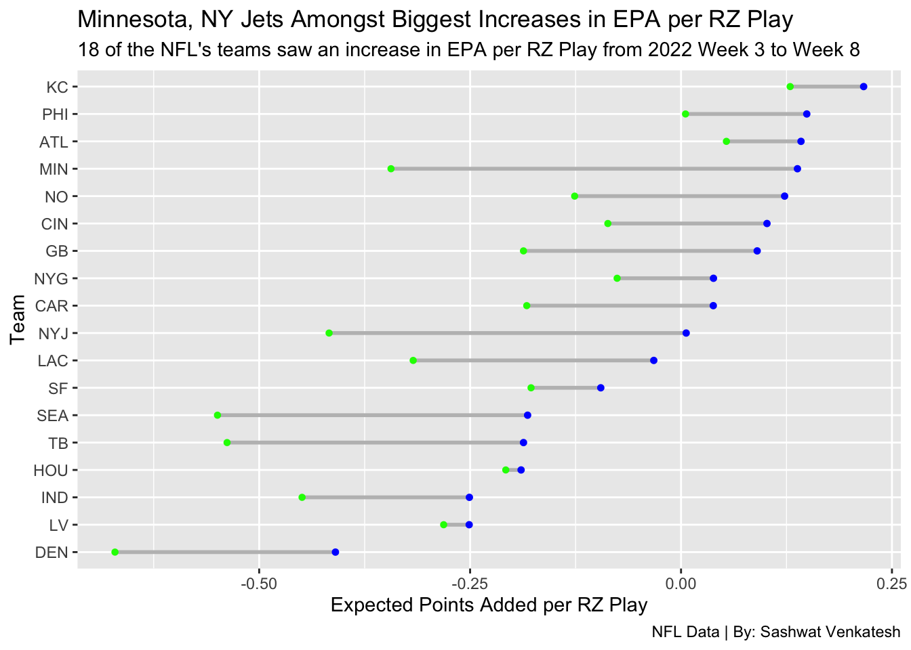
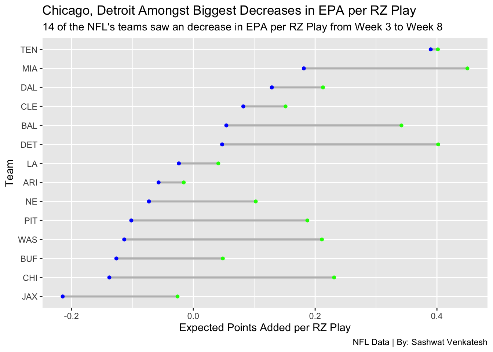

Code
suppressMessages(library(tidyverse))
suppressMessages(library(nflreadr))
suppressMessages(library(ggplot2))
suppressMessages(library(ggrepel))
suppressMessages(library(ggalt))Sashwat Venkatesh
November 2, 2023
Does it pay to be hot early on, or is it better to peak later in the season? Some 2022 NFL teams may give you different answers than others, but let’s see if there’s something bubbling under the sea of data we have available.
After loading in the data, we need to filter out kickoffs, field goals, etc. just so that we can get non-scoring and “non-procedural” plays, so all runs and passes.
plays2022_3 <- plays2022 |> filter(week <= 3) |> filter(yardline_100 <= 20)
redzone2022_3 <- plays2022_3 |> group_by(posteam) |>
summarise(`RZ Plays Through W3` = n(),
`Total EPA from RZ Plays Through W3` = sum(epa),
`EPA per RZ Play Through W3` = sum(epa)/n())
head(redzone2022_3 |> arrange(desc(`EPA per RZ Play Through W3`)))# A tibble: 6 × 4
posteam `RZ Plays Through W3` Total EPA from RZ Plays…¹ EPA per RZ Play Thro…²
<chr> <int> <dbl> <dbl>
1 MIA 20 9.00 0.450
2 DET 29 11.7 0.402
3 TEN 14 5.62 0.402
4 BAL 29 9.91 0.342
5 CHI 18 4.16 0.231
6 DAL 16 3.41 0.213
# ℹ abbreviated names: ¹`Total EPA from RZ Plays Through W3`,
# ²`EPA per RZ Play Through W3`Looking at the 2022 data through 3 weeks, we notice some really interesting things. Despite having run just half the plays as the Detroit Lions, the Tennessee Titans were exactly on par from a EPA per Redzone play metric. Knowing what we know now, the Lions ended with a 9-8 record, and the Titans ended with a measly 7-10 record, with both groups missing the playoffs. Interestingly, the eventual 12-5 Dallas Cowboys were operating at less than half the level of the Dolphins, who would win 3 less games, so perhaps there is something to be said about peaking at the right times.
plays2022_8 <- plays2022 |> filter(week <= 8) |> filter(yardline_100 <= 20)
redzone2022_8 <- plays2022_8 |> group_by(posteam) |>
summarise(`RZ Plays Through W8` = n(),
`Total EPA from RZ Plays Through W8` = sum(epa),
`EPA per RZ Play Through W8` = sum(epa)/n())
head(redzone2022_8 |> arrange(desc(`EPA per RZ Play Through W8`)))# A tibble: 6 × 4
posteam `RZ Plays Through W8` Total EPA from RZ Plays…¹ EPA per RZ Play Thro…²
<chr> <int> <dbl> <dbl>
1 TEN 43 16.8 0.390
2 KC 97 21.0 0.216
3 MIA 61 11.1 0.181
4 PHI 79 11.8 0.149
5 ATL 78 11.1 0.142
6 MIN 78 10.8 0.138
# ℹ abbreviated names: ¹`Total EPA from RZ Plays Through W8`,
# ²`EPA per RZ Play Through W8`Moving on 5 weeks later, our top 6 has shifted. The once #5 Chicago Bears are nowhere to be seen, and down the path to a dismal 3-14 record. Eventual Super Bowl Champions Kansas City join the fray, with the soon-to-be NFC champion Philadelphia Eagles also finding their way into the top 6. At the end of Week 8, 5 of our top 6 teams are teams that ended their 17 game slate with a record over .500, with two of those teams playing in the Super Bowl.
Clearly, to some extent, peaking at the right time and leading the league at the right time matters.
posteam EPA per RZ Play Through W3 EPA per RZ Play Through W8
1 MIN -0.3437532 0.137963044
2 NYJ -0.4171309 0.006090288
3 SEA -0.5494196 -0.181844085
4 TB -0.5380498 -0.186703985
5 LAC -0.3174684 -0.032288263
6 GB -0.1867312 0.090250550
Change from W3 to W8
1 0.4817162
2 0.4232212
3 0.3675755
4 0.3513458
5 0.2851801
6 0.2769818In the 2022 season, we can see that the Minnesota Vikings and the New York Jets were the two teams that experienced the biggest gains in EPA. Looking at their individual performances:
The Minnesota Vikings started 2-1, but improved to 6-1 at the end of week 8. The Vikings had their bye week in Week 7.
The New York Jets started 1-2, ekeing out a 31-30 win on the road against the Cleveland Browns and ended Week 8 with a 5-3 record. Unfortunately for the Jets, their fortune and productivity would soon run out, going 2-7 in the back half of the season. The Jets peaked as a 7-4 team, and then proceeded to not win a single game through all of December and January, crushing their hopes at a postseason berth.
posteam EPA per RZ Play Through W3 EPA per RZ Play Through W8
1 CHI 0.2311495 -0.13791863
2 DET 0.4020577 0.04728046
3 WAS 0.2111315 -0.11344078
4 PIT 0.1872190 -0.10186949
5 BAL 0.3417048 0.05420067
6 MIA 0.4500259 0.18138783
Change from W3 to W8
1 -0.3690682
2 -0.3547772
3 -0.3245723
4 -0.2890885
5 -0.2875041
6 -0.2686381On the flip side, who are our biggest losers?
The Chicago Bears and the Detroit Lions, two teams in our Week 3 Top 6, find themselves with the horrible honor of being the biggest losers from Weeks 3 to 8.
The Bears made it to Week 3 with a 2-1 record, but then proceeded to win just ONE more game all season, going through the months of November, December, and January without a win. Understandably, their EPA per Redzone play tanks, and continues to tank over the course of 17 games.
The Lions, who started 1-2, looked almost CERTAIN for doom at the end of Week 8. After playing 7 games, they had a horrendous 1-6 record, with many chalking them up as tanking candidates. What followed was a series of heroics by the team to win 8 of the next 10 games, with a combined margin of loss of just 17 points. Unfortunately, it would be too little too late for the Lions, who ended 2nd in the NFC North and missed out on a playoff spot due to their head-to-head record against the Seattle Seahawks, who they lost to in a Week 4 shootout that ended 48-45. One field goal going the other way, and perhaps we’d be talking about the Lions in a completely different light.
increase <- combined |> filter(`EPA per RZ Play Through W3` < `EPA per RZ Play Through W8`)
decrease <- combined |> filter(`EPA per RZ Play Through W3` > `EPA per RZ Play Through W8`)
ggplot() +
geom_dumbbell(
data=increase,
aes(y=reorder(posteam, `EPA per RZ Play Through W8`),
x= `EPA per RZ Play Through W3`, xend=`EPA per RZ Play Through W8`),
colour = "grey",
colour_x = "green",
colour_xend = "blue",
size=1
) +
xlab("Expected Points Added per RZ Play") +
ylab("Team") +
labs(title="Minnesota, NY Jets Amongst Biggest Increases in EPA per RZ Play", subtitle="18 of the NFL's teams saw an increase in EPA per RZ Play from 2022 Week 3 to Week 8",
caption="NFL Data | By: Sashwat Venkatesh")Warning: Using the `size` aesthetic with geom_segment was deprecated in ggplot2 3.4.0.
ℹ Please use the `linewidth` aesthetic instead.
Looking at the graph of increases, even outside of Minnesota and the Jets, there are some other big gainers. The Seahawks and Tampa Bay both showed big strides, as well as the Broncos, who most would agree were the league’s biggest disappointment in 2022.
ggplot() +
geom_dumbbell(
data=decrease,
aes(y=reorder(posteam, `EPA per RZ Play Through W8`),
x= `EPA per RZ Play Through W3`, xend=`EPA per RZ Play Through W8`),
colour = "grey",
colour_x = "green",
colour_xend = "blue",
size=1
) +
xlab("Expected Points Added per RZ Play") +
ylab("Team") +
labs(title="Chicago, Detroit Amongst Biggest Decreases in EPA per RZ Play", subtitle="14 of the NFL's teams saw an decrease in EPA per RZ Play from Week 3 to Week 8",
caption="NFL Data | By: Sashwat Venkatesh") +
scale_color_manual(name = "", values = c("red", "blue") )
Looking at our biggest losers gpaph, Miami is a striking regression down from their hot start. Pundits and talking heads were certain that after a 5-3 start that eventually became 8-3, the Dolphins were destined for something big come playoff time. However, those Dolphins continued their downward dive, lost 5 on the bounce, and bailed themselves out in Week 18 with an 11-6 win over the New York Jets. The data showed us that maybe the Dolphins weren’t destined for something great, but we have to take this with a grain of salt, considering the absolutely shambolic handling of Quarterback Tua Tagovailoa’s concussions.
To wrap things up, by week 8, or about 50% of the season, we can get a rough idea as to where teams will end up. Teams that start hot and regress may have some hope, but we can also definitely say that it’s not fair to write off teams that start slow. This data can only tell us, and show us so much, but without a doubt, there’s something to be said about being red-hot in the redzone.